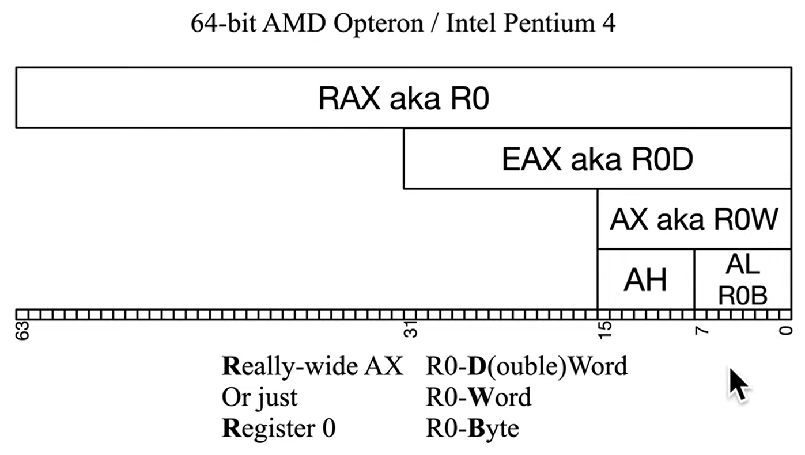

x86-64 has 16 general purpose registers, 64 bits wide
x86-32 has 8 gps and 32 bit wide
out of these registers, one is for IP, one for flag and the rest are "segment"
there are 2 naming conventions for the registers, one by intel and one by amd
intel marks alphabetical names with meaning

The 8 GPRs are as follows by intel's naming convention:
(note. this convention is optional, gpr's can be used differently)
- Accumulator register (AX). Used in arithmetic operations
- Counter register (CX). Used in shift/rotate instructions and loops and strings.
- Data register (DX). Used in arithmetic operations and I/O operations.
- Base register (BX). Used as a pointer to data (located in segment register DS, when in segmented mode).
- Stack Pointer register (SP). Pointer to the top of the stack.
- Stack Base Pointer register (BP). Used to point to the base of the stack.
- Source Index register (SI). Used as a pointer to a source in stream operations.
- Destination Index register (DI). Used as a pointer to a destination in stream operations.
- Instruction pointer (IP). pointer to next instruction to execute